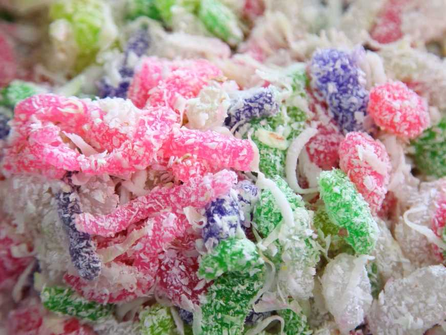
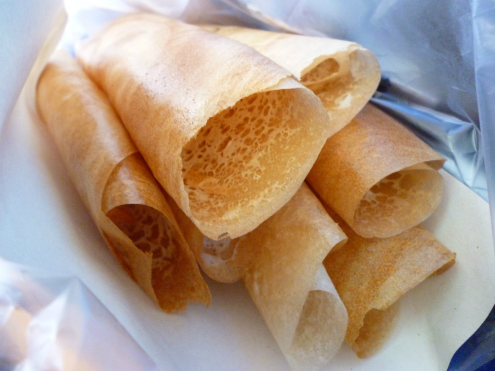
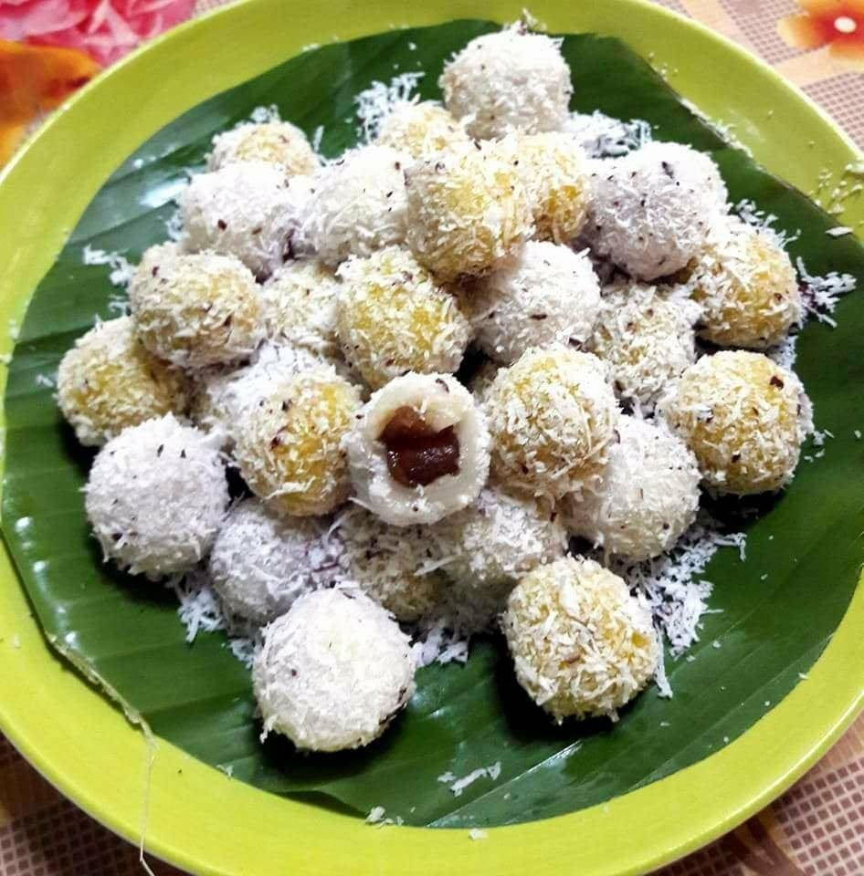
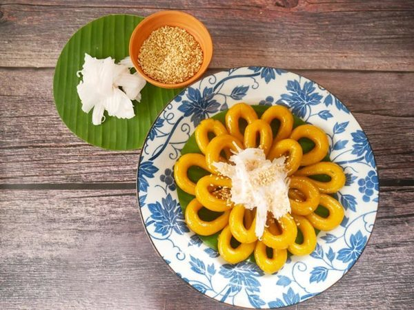
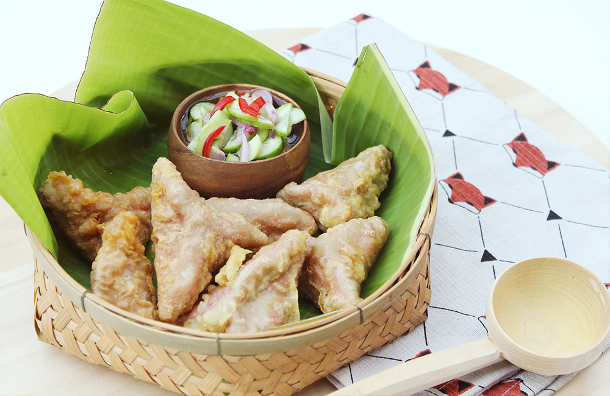

1.) ขนมด้วง
ส่วนผสม
- แป้งมัน 1 ช้อนโต๊ะ
- แป้งข้าวจ้าว 1 ถ้วย
- แป้งมันสำหรับทำแป้งนวล ½ ถ้วย
- มะพร้าวทึนทึกขูดขาว 200 กรัม
- น้ำตาลทราย ½ ถ้วย
- งาขาวคั่ว ¼ ถ้วย
- น้ำดอกมะลิ 2 ถ้วย
- หัวกะทิ 1 ถ้วย
- เกลือ 1 ช้อนชา
- สีผสมอาหารตามชอบ
วิธีทำ
- แป้งมันและแป้งข้าวจ้าวผสมเข้าด้วยกัน ค่อยๆเทน้ำดอกมะลิลงไป กวนจนแป้งเป็นก้อนร่อนจากกระทะทองเหลืองยกลง
- นำแป้งมานวดมือ โดยผสมสีผสมอาหารลงไปตามชอบ นวดจนแป้งนุ่มและไม่ติดมือ คลึงแป้งเป็นตัวด้วงปลายแหลมด้านหนึ่ง อีกด้านหนึ่งมน ยาวประมาณ 4 เซนติเมตร
- นำไปนึ่งในซึ้งโดยปูรองด้วยผ้าขาวบาง นึ่งจนสุก นำขนมที่นึ่งสุกแล้วจัดใส่จาน พรมด้วยหัวกะทิโรยด้วยมะพร้าวขูด งาข้าวและน้ำตาลทราย
2.) ขนมอาโป๊ง
ส่วนผสม
- แป้งข้าวจ้าว 2 ถ้วย
- น้ำตาลทราย 1 1/2 ถ้วย (ถ้วยครึ่ง)
- มะพร้าว 1 ลูก
- ยีนส์ 1 1/2 ช้อนชา (ช้อนชาครึ่ง)
- ไข่ไก่ 1 ฟอง
- น้ำมันนิดหน่อย **มะพร้าวคั้นกะทิ หัว 1 ถ้วย หาง 2 ถ้วย
วิธีทำ
- ละลายแป้งกับหางกะทิ ยีสต์ น้ำตาล นวดจนน้ำตาลทรายเข้ากันดีทิ้งไว้ประมาณ 1 ชั่วโมง เพื่อให้ยีสต์เจริญเติมโต(แป้งขึ้น)
- ตีไข่ไก่ให้เข้ากัน เทผสมลงในแป้งและใส่หัวกะทิ คนให้เข้ากัน
- กะทะเหล็กใบเล็ก ๆ ก้นลึกตั้งไฟเอาอั้งโล่ ถ่านไฟน้อย ๆ พอกะทะร้อนดี เช็ดกะทะด้วยน้ำมันให้ทั่ว
- ตักแป้งใส่ประมาณ 1 ทัพพีเล็ก ละเลงให้เป็นวงกลมขนาดเส้นผ่าศูนย์กลาง 5-6 นิ้ว ตรงกลาง แป้งจะหนากว่าขอบริม ปิดฝาทิ้งไว้หนึ่งอึดใจ
- แซะริมที่กรอบด้วยตะหลิวแบนขึ้นจากกะทะ วางบนถาดแบนพับริมทั้ง 2 ข้างเข้าหาตรงกลางเป็นรูปสี่เหลี่ยมผืนผ้า
- ทำวิธีการเดียวกับข้อ 5 ไปเรื่อย ๆ จนหมดแป้ง จะได้ขนมประมาณ 20 ชิ้น
3.) ขนมโค
ส่วนผสม
- แป้งข้าวเหนียว 2 ถ้วยตวง
- แป้งข้าวเหนียว 1 1/2 ถ้วย
- ข้าวเหนียวดำบด 1/2 ถ้วย
- น้ำเปล่า 2/3 ถ้วย หรือ กะๆเอาแค่พอปั้นแป้งเป็นก้อนได้
- มะพร้าวทึนทึก ขูดฝอย เกลือ ป่น นิดหน่อย
- น้ำผึ้งแว่น (น้ำตาลแว่น ทำจากน้ำตาลโตนด )
วิธีทำ
- ผสมแป้งในอ่าง ค่อยๆ ใส่น้ำ แล้วขยำๆๆนวดๆ จนเข้ากันดี โดยแป้งนิ่มไม่ติดมือ และปั้นได้เป็นลูก
- นำน้ำตาลแว่น หั่นเป็นลูกเต๋า เล็กๆ ประมาณ เม็๋ดลำใย ลูกเล็ก
- ขูดมะพร้าว เตรียมไว้
- ตั้ง ใน 3/4 ส่วน ในหม้อใบลึก เปิดไฟค่อนข้างแรง
- คลึงแป้งเป็นท่อนยาวๆก่อน แล้วค่อย บิ ให้เป็นก้อนเล็กๆ ใส่ในอุ้งมือ แล้วกดๆแป้งให้แบนๆ เอาน้ำผึ้งแว่น ใส่ตรงกลาง แล้วห่อ ให้มิด
- ตอนห่อนี่สำคัญมาก ต้องห่อให้มิดจริงๆหากห่อไม่ติดตอนต้ม น้ำจะซึมเข้าในในตัวขนมทำให้ผึ้งแว่นละลาย ทำให้ไม่น่ากิน
- ตอนปั้นอย่าปั้นรอไว้เยอะๆ น้ำผึ้งแว่นจะละลายเร็ว ทำให้ไม่อร่อยเพราะน้ำผึ้งแว่นเหลว ตอนทาน กะปั้นไว้แค่พอ ลวกเต็มหม้อ - เบาไฟลงปานกลาง แล้วทยอยเอาขนมที่ห่อใส้แล้ว ลงลวกในหม้อ ระหว่างนี้ให้เอา เกลือโรยลงในมะพร้าวขูด นิดหน่อย แค่เค็มพอปะแล่มๆๆ แบบกะทิหน้าตะโก้ ประมาณนั้นค่ะ หรือจะเทมะพร้าวขูดลงในถาด กว้างๆ รอไว้ก็ได้ บ้านเราทำแบบนี้ หากปั้นขนมโคเยอะๆ
- พอขนมลอย ก็ ตักขึ้นสะบัดน้ำออกนิดหน่อย รีบ เทขนมลงในถาดมะพร้าวขูด แล้ว แกว่งๆ ให้มะพร้าว คลุกตัวขนมโคให้ทั่ว
4.) ขนมไข่ปลา
ส่วนผสม
- แป้งข้าวเจ้า 100 กรัม
- แป้งข้าวเหนียว 500 กรัม
- น้ำตาลทรายทำน้ำเชื่อม 500 กรัม
- เนื้อลูกตาลยี 500 กรัม
- มะพร้าวทึนทึกขูดเส้น
- เกลือป่น เล็กน้อย
- ใบเตยต้มใส่ในน้ำเชื่อม 5 - 10 ใบ
วิธีทำ
- ทำน้ำเชื่อมไว้ก่อน โดยต้มน้ำใส่ใบเตยลงไป ค่อยๆ ใส่น้ำตาลลงไปคนให้ละลายตั้งไฟอ่อนมากๆไว้
- ผสมแป้งเพื่อทำตัวขนม แป้งข้าวเจ้าและแป้งข้าวเหนียว เทใส่ในกะละมัง ใส่เนื้อลุกตาลยีลงไป
- นวดผสมให้เป็นเนื้อเดียวกัน ถ้าแห้งเกินไป ค่อยๆเติมน้ำนะค่ะ อย่าเติมที่เดียวเยอะ จะแฉะเกินไป
- จากนั้นปั้นเป็นเส้นๆ ลักษณะเหมือนไข่ปลา เอาปลายมาทับกันไว้ เรียงใส่ถาดรอต้มไว้
- น้ำเชื่อมที่ได้แบ่งใส่กะละมังอีกใบไว้สำหรับแช่ขนมไข่ปลาที่ต้มสุกแล้ว เอาขนมไส้ปลาที่ปั้นไว้ลงต้มในน้ำเชื่อมที่เหลือ ต้มจนสุกขนมไข่ปลาที่สุกแล้วจะลอยขึ้นมา ช้อนมาใส่ในน้ำเอมที่แบ่งไว้
- เวลาจะกินก็เตรียมมะพร้าวคลุกกับเกลือสำหรับคลุก ช้อนเอาแต่เนื้อขนมไข่ปลา เอามาคลุกกับมะพร้าวจัดใส่จานค่ะ
5.) ขนมค้างคาว
ส่วนผสม
- กุ้งสด
- เกลือ
- มะพร้าวขูด
- น้ำตาล
- กระเทียม
- แป้ง
- น้ำกะทิ
วิธีทำ
-การทำไส้-
- นำกุ้งสดมาต้มให้สุก แล้วสับพอละเอียด
- นำกระเทียมมาสับให้ละเอียดแล้วนำมาผัดกับน้ำกะทิ เติมน้ำตาลและเกลือลงไปเล็กน้อย
-การผสมแป้ง-
- นำแป้งข้าวเหนียวมานวดกับน้ำกะทิใส่เกลือเล็กน้อย นวดให้เข้ากัน
- นำแป้งที่นวดแล้วปั้นให้กลม แล้วบีบให้แบน นำไส้ที่เตรียมไว้มาใส่ลงตรงกลางจีบรูปสามเหลี่ยมคล้ายปีกค้างคาว
- ตั้งน้ำมันให้ร้อน นำขนมที่ปั้นเสร็จแล้ว ลงทอดให้สุก